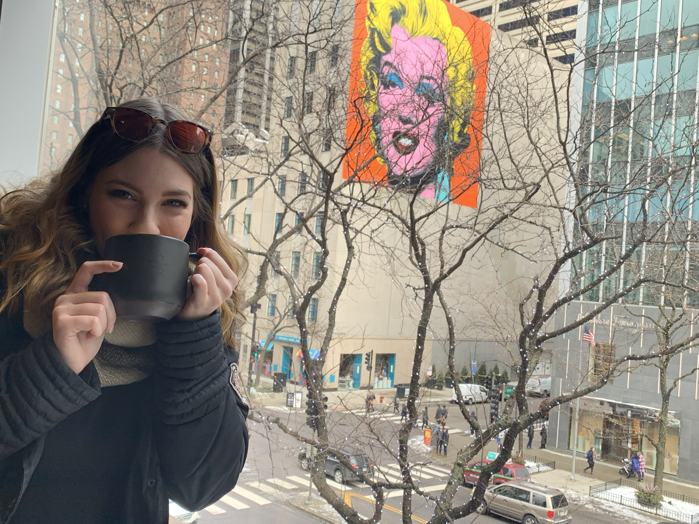
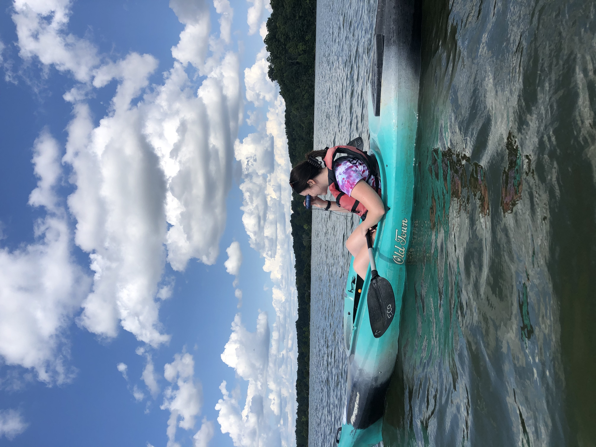
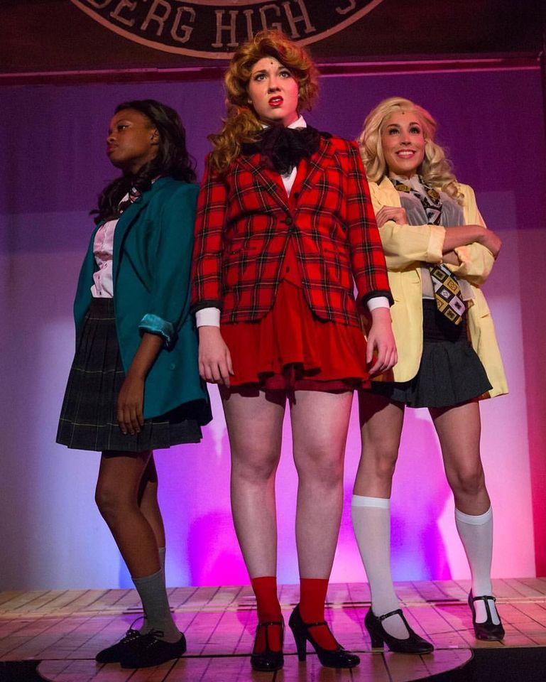
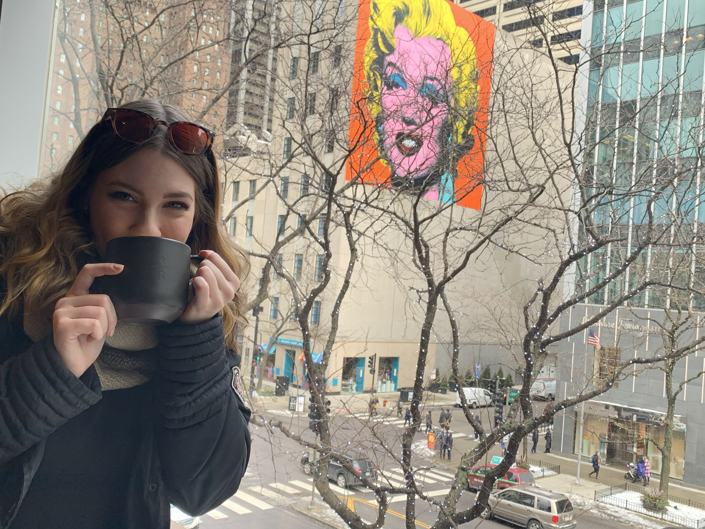
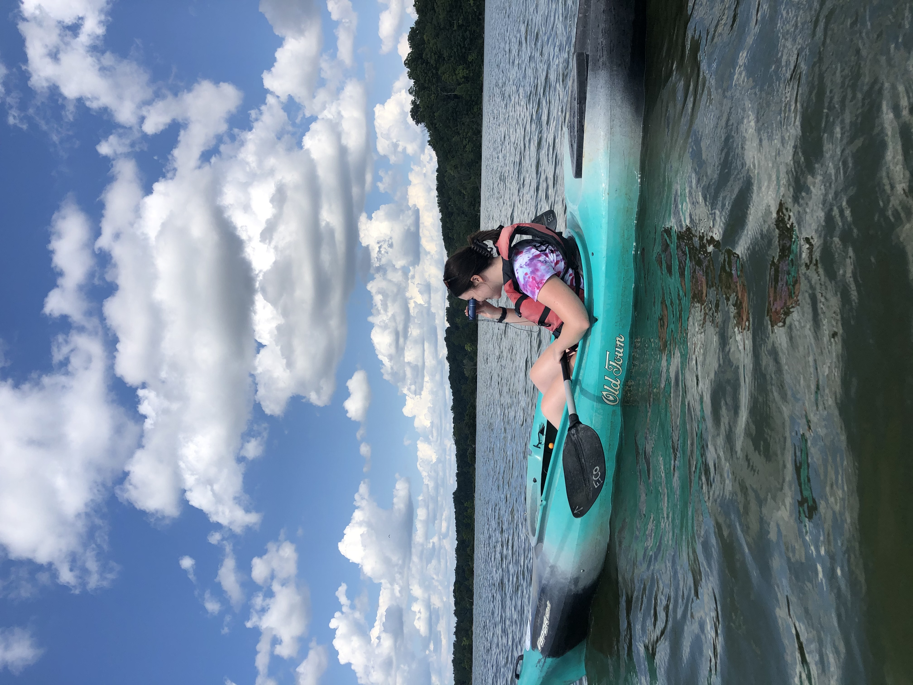
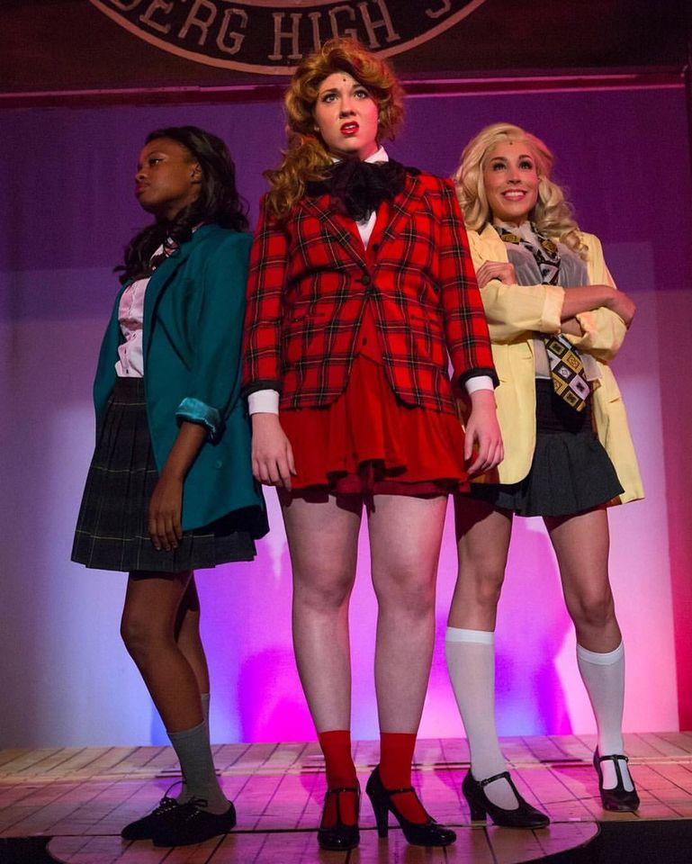

Interests
I currently live in Broadripple Village with my rescue greyhound Nora and my cat Dulce. We often enjoy going on walks on the monon, yes even the cat, and grabbing a coffee. I like to consider myself a coffee connoisseur and typically spend my weekends going to different coffee shops around Indianapolis. Besides drinking copious amounts of coffee, I also enjoy hiking at state parks and kayaking at my favorite place, Eagle Creek Park. Once the pandemic is over, I plan on taking a trip out west and exploring more hiking trails. Music and Theatre have also been a big part of my life growing up here, I have been in many shows around the area, including the remake of the 80's cult classic Heather's, where I got to play the infamous Heather Chandler. During quarintine I have been able to improve on my piano and ukeulele skills and tend to use that to destress. Volunteering has also been a very important part of my life since high school and after I graduated college I signed up with Big Brother's Big Sister's to become a big. My Little, Sa'Myuh and I enjoy trying new resturaunts together and playing carpool karaoke.
 




